Random walks with the Econometrics Toolbox
In this demo we use the SDE framework in the Econometrics Toolbox to implement various random walks.
Contents
Random Walks
See also (http://en.wikipedia.org/wiki/Random_walk)
A random walk is a trajectory comprised of a series of random steps. This file looks at the case where the random walk occurs
on a graph. Here, given a collection of nodes and the edges between them one starts at an initial node and moves to the next
one by picking one of its neighbours at random. A common analogy is to imagine a drunk staggering around the graph picking
their next point at random. Special cases of these are when the graph is a lattice in  , i.e. an n-dimension lattice that can be viewed as a copy of
, i.e. an n-dimension lattice that can be viewed as a copy of  . If 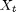 represents the state of the random walk at the timestep t then we can write
. If 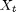 represents the state of the random walk at the timestep t then we can write

where v is a random direction. For the case of the random walk in n dimensions, 
where 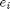 is the  basis element. The above can be written in the form:
basis element. The above can be written in the form:

where  is the change at timestep t.
is the change at timestep t.
Stochastic differential equations
A Stochastic differential equation is an equation of the form:

where 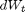 is a stochastic disturbance. Normally these are taken to be gaussians (as in the case of brownian motion) but other distributions
are perfectly admissable. If we set 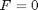 and  then we get:
then we get:
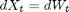
which is the form of the random walk equation above. The Econometrics Toolbox contains an engine to simulate SDEs which permits us to specify the random pertubations the system is subject to, so by creating a relevant stochastic process we can use the SDE framework to model random walks. The function we use is RandDir which generates random basis vectors in N dimensions.
type RandDir
function out = RandDir(N)
% Generate a random vector from the set {+/- e_1, +/- e_2,..., +/- e_N}
% where e_i is the ith basis vector. N should be an integer.
I = round(ceil(2*N*rand));
if rem(I,2) == 1
sgn = -1;
else
sgn = 1;
end
out = zeros(N,1);
out(ceil(I/2)) = sgn*1;
end
We now use this in 1,2 and 3 dimensions
One dimension
Initial case - random walk on a line
N = 1; % Dimensions F = @(t,X) zeros(N,1); % Drift G = @(t,X) eye(N); % diffusion S = sde(F,G,'startState',zeros(N,1)); % Start at the origin
We now simulate 10000 steps of this process
X = S.simByEuler(10000,'ntrials',1,'Z',@(t,X) RandDir(N)); comet(1:numel(X),X); plot(1:numel(X),X); grid on;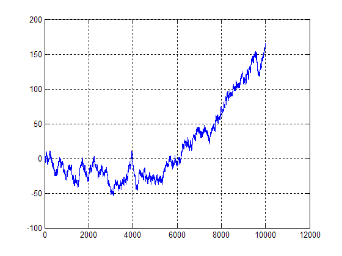
Two dimensions
Move to motion on a two dimensional lattice, the code is much the same, all that we need to change is the dimension parameter
N = 2; F = @(t,X) zeros(N,1); G = @(t,X) eye(N); S = sde(F,G,'startState',zeros(N,1)); X = S.simByEuler(10000,'ntrials',1,'Z',@(t,X) RandDir(N)); comet(X(:,1),X(:,2)); plot(X(:,1),X(:,2)); grid on;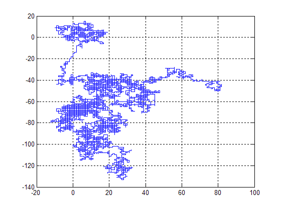
Two dimensions, many drunkards
It's kicking out time at the pub, where will our 50 drunkards end up? Or put more clinically let's simulate and plot many random walks leaving the same point.
M = 50; N = 2; F = @(t,X) zeros(N,1); G = @(t,X) eye(N); S = sde(F,G,'startState',zeros(N,1)); X = S.simByEuler(10000,'ntrials',M,'Z',@(t,X) RandDir(N)); figure('color','w'); axes; grid on; shg for ii = 1:M line(X(:,1,ii),X(:,2,ii),'color',rand(1,3)); drawnow pause(.05); end

Drunkards... with Jet-packs
AKA Random walks in 3 dimensions
N = 3; F = @(t,X) zeros(N,1); G = @(t,X) eye(N); S = sde(F,G,'startState',zeros(N,1)); X = S.simByEuler(10000,'ntrials',1,'Z',@(t,X) RandDir(N)); comet3(X(:,1),X(:,2),X(:,3)); plot3(X(:,1),X(:,2),X(:,3)); grid on;

Multiple paths
M = 50; X = S.simByEuler(1000,'ntrials',M,'Z',@(t,X) RandDir(N)); figure('color','w'); grid; view(3) shg for ii = 1:M line(X(:,1,ii),X(:,2,ii),X(:,3,ii),'color',rand(1,3)); drawnow pause(.1); end

Random tube journey
When introducing the idea of random walks they were defined in terms of motion through a graph, so far we have looked at just simple lattices, but we can also consider more complex graphs. Given a connection matrix the function RandomGraphMove computes a random move on the graph.
type RandomGraphMove
function out = RandomGraph(X,S) % Produce a random edge on a graph defined by S % % inputs: % X: current node % S: Connections matrix, S(i,j) lists the number of edges between node i % and node j V = S(:,X); % Node this one is connected with Idx = find(V); v = V(Idx)/sum(V); s = cumsum(v); r = rand; ind = find(s > r); out = Idx(ind(1)); end
Here by "Connection" matrix I mean that if the graph has N nodes then the matrix should be N by N and the (i,j) element should be the number of edges between node i and node j. So which graph to experiment with? The file "DemoData.mat" contains information about the London Underground.
load DemoData
We start our random tube trip from Piccadilly, site of many a successful MathWorks seminar
Ind = 194; % starting point F = @(t,X) 0; G = @(t,X) 1; S = sde(F,G,'startState',Ind); X = S.simByEuler(1000,'ntrials',1,'Z',@(t,X) RandomGraphMove(X,Connections)-X);
Visualise the random walk
[Img,map] = imread('Demo_Image.gif'); spos = get(0,'screensize'); figure('position',[spos(3)/10 spos(4)/10 spos(3)*.8 spos(4)*.8],'color','w'); image(Img); colormap(map); set(gca,'xtick',[],'ytick',[]); L = []; for ii = 1:numel(X) xdata = pData(X(ii),1); ydata = pData(X(ii),2); if isempty(L) L = line(xdata,ydata,'color','r','marker','o','markersize',12,... 'markeredgecolor','k','markerfacecolor','r'); else set(L,'xdata',xdata,'ydata',ydata); end pause(0.05); drawnow end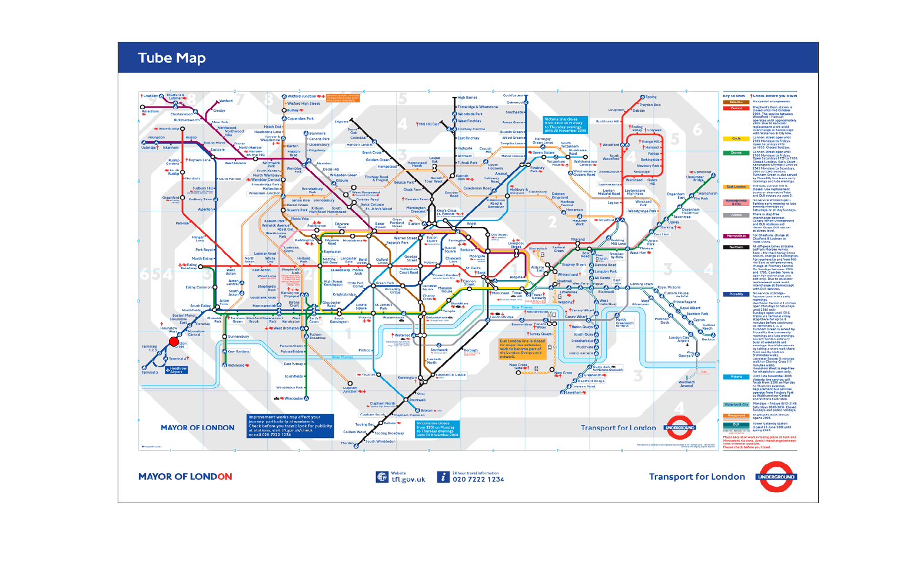
Visualise this walk by plotting lines showing how many times the random walk visited each stations
figure('position',[spos(3)/10 spos(4)/10 spos(3)*.8 spos(4)*.8],'color','w'); surf([1:size(Img,2)],[1:size(Img,1)],zeros(size(Img)),... flipud(Img),'Cdatamapping','direct',... 'facecolor','texturemap','edgecolor','none'); colormap(map); Visited = unique(X); xdata = zeros(size(Visited)); ydata = xdata; zdata = xdata; for ii = 1:numel(Visited) zdata(ii) = sum(X == Visited(ii)); xdata(ii) = pData(Visited(ii),1); ydata(ii) = size(Img,1)+1-pData(Visited(ii),2); line(xdata(ii)*[1;1],ydata(ii)*[1;1],[0 zdata(ii)],'color','b',... 'linewidth',2); end set(gca,'xtick',[],'ytick',[]); colormap(map); view([0.8704 -0.4924 0 -0.1890;... 0.3880 0.6858 0.6157 -0.8448;... 0.3032 0.5358 -0.7880 8.6348;... 0 0 0 1.0000]);

1000 West Ham fans leave Upton Park after a glorious victory, in their euphoria they cannot navigate home, what happens to them?
load DemoData Ind = strmatch('Upton',Stations); F = @(t,X) 0; G = @(t,X) 1; S = sde(F,G,'startState',Ind); X = S.simByEuler(100,'ntrials',1000,'Z',@(t,X) RandomGraphMove(X,Connections)-X);
Visualise the random walk
X = squeeze(X); [Img,map] = imread('Demo_Image.gif'); spos = get(0,'screensize'); f = figure('position',[spos(3)/10 spos(4)/10 spos(3)*.8 spos(4)*.8],'color','w'); image(Img); colormap(map); set(gca,'xtick',[],'ytick',[]); L = []; for ii = 1:size(X,1) xdata = pData(X(ii,:),1); ydata = pData(X(ii,:),2); if isempty(L) L = line(xdata,ydata,'color','r','marker','o','markersize',12,... 'linestyle','none','markeredgecolor','k','markerfacecolor','r'); else set(L,'xdata',xdata,'ydata',ydata); end pause(0.1); drawnow end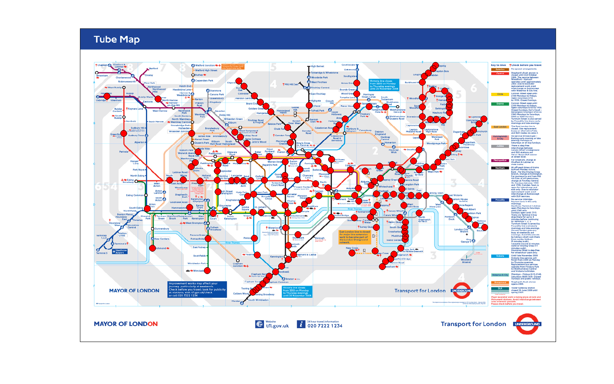
Visualise this walk by plotting lines showing how many times the random walk visited each stations
figure('position',[spos(3)/10 spos(4)/10 spos(3)*.8 spos(4)*.8],'color','w'); surf([1:size(Img,2)],[1:size(Img,1)],zeros(size(Img)),... flipud(Img),'Cdatamapping','direct',... 'facecolor','texturemap','edgecolor','none'); colormap(map); Visited = unique(X(end,:)); xdata = zeros(size(Visited)); ydata = xdata; zdata = xdata; for ii = 1:numel(Visited) zdata(ii) = sum(X(end,:) == Visited(ii)); xdata(ii) = pData(Visited(ii),1); ydata(ii) = size(Img,1)+1-pData(Visited(ii),2); line(xdata(ii)*[1;1],ydata(ii)*[1;1],[0 zdata(ii)],'color','b',... 'linewidth',2); end set(gca,'xtick',[],'ytick',[]); colormap(map); view([0.8704 -0.4924 0 -0.1890;... 0.3880 0.6858 0.6157 -0.8448;... 0.3032 0.5358 -0.7880 8.6348;... 0 0 0 1.0000]);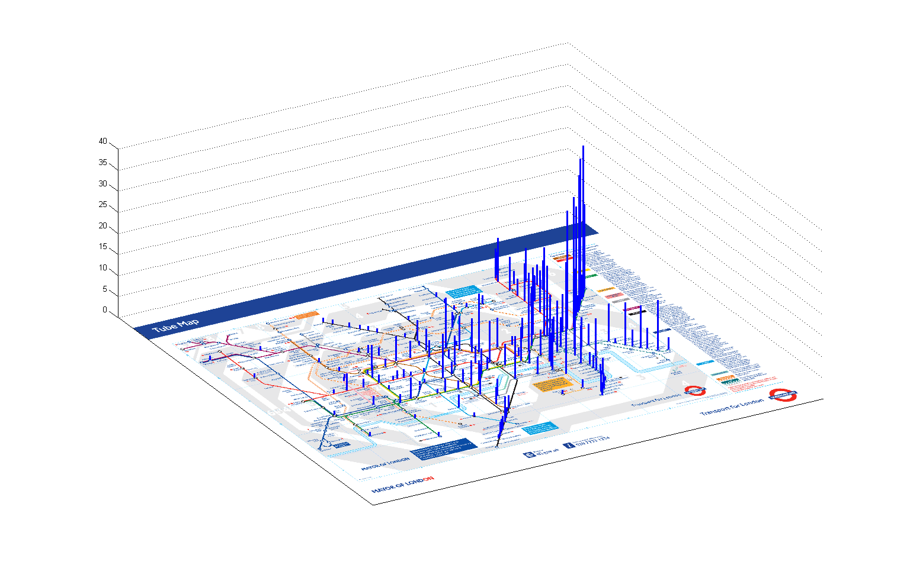